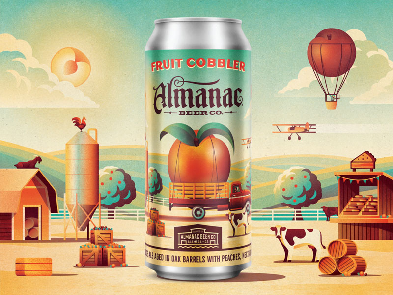

background-blend-mode
background-blend-mode: normal | multiply | screen | overlay | darken | lighten | color-dodge | color-burn | hard-light | soft-light | difference | exclusion | hue | saturation | color | luminosity;
| 종류 | 예시 |
|---|---|
| normal | 배경색의 기본 값을 정의합니다. |
| multiply | 더 어두운 색으로 변경됩니다. |
| screen | 더 밝은 색으로 변경됩니다. |
| overlay | 원래 색상의 농도와 밝기를 변경합니다. |
| darken | 어두운 색으로 변경됩니다. |
| lighten | 밝은 색으로 변경됩니다. |
| color-dodge | 기본 색상을 밝게 합니다. |
| color-burn | 기본 색상을 어둡게 합니다. |
| hard-light | 기본 색상을 밝게 합니다. |
| soft-light | 기본 색상을 어둡게 합니다. |
| difference | 기본 색상을 difference 합니다 |
| exclusion | 기본 색상을 exclusion 합니다. |
| hue | 기본 색상을 hue 합니다. |
| saturation | 채도의 변화로 색상이 변경됩니다. |
| color | 색을 통해 색상을 변경합니다. |
| luminosity | 밝기를/ 통해 색상을 변경합니다. |
background-blend-mode
background-blend-mode
normal
multiply
screen
darken
lighten
color-dodge
color-burn
hard-light
soft-light
difference
exclusion
hue
saturation
color
luminosity
mix-blend-mode
mix-blend-mode
normal
multiply
screen
darken
lighten
color-dodge
color-burn
hard-light
soft-light
difference
exclusion
exclusion
saturation
color
luminosity
filter
filter : none | blur() | brihgtness() | contrast | drop-shadow() | grayscale() | hue-rotate() | invert() | opacity() | saturate() | sepia() | url()<
| Porperty | Description |
|---|---|
| none | 이미지의 아무런 효과를 주지 않습니다. |
| blur(px) | 이미지의 블러 효과를 설정합니다. |
| brihgtness(%) | 이미지의 밝고 어두움 정도를 설정합니다. |
| contrast(%) | 이미지의 대비를 설정합니다. |
| drop-shadow() | 이미지의 그림자를 설정합니다. |
| grayscale(%) | 이미지의 그레이스케일을 설정합니다. |
| hue-ratate(deg) | 이미지의 색조를 설정합니다. |
| invert(%) | 이미지의 반전색상을 설정합니다. |
| opacity(%) | 이미지의 투명도를 설정합니다. |
| saturate(%) | 이미지의 채도를 설정합니다. |
| sepia(%) | 이미지의 세피아 효과를 설정합니다. |
| url() | 이미지의 경로를 설정합니다. |
filter : blur
filter : blur

.original3.blur > div:nth-child(1) {filter: blur(1px);}
.original3.blur > div:nth-child(2) {filter: blur(3px);}
.original3.blur > div:nth-child(3) {filter: blur(5px);}
.original3.blur > div:nth-child(4) {filter: blur(10px);}
filter : brightness
filter : brightness
.original3.brightness > div:nth-child(1) {filter: brightness(10%);}
.original3.brightness > div:nth-child(2) {filter: brightness(30%);}
.original3.brightness > div:nth-child(3) {filter: brightness(50%);}
.original3.brightness > div:nth-child(4) {filter: brightness(100%);}
filter : contrast
filter : contrast
.original3.contrast > div:nth-child(1) {filter: contrast(10%)}
.original3.contrast > div:nth-child(2) {filter: contrast(20%)}
.original3.contrast > div:nth-child(3) {filter: contrast(30%)}
.original3.contrast > div:nth-child(4) {filter: contrast(50%)}
filter : grayscale
filter : grayscale
.original3.grayscale > div:nth-child(1) {filter: grayscale(100%)}
.original3.grayscale > div:nth-child(2) {filter: grayscale(80%)}
.original3.grayscale > div:nth-child(3) {filter: grayscale(60%)}
.original3.grayscale > div:nth-child(4) {filter: grayscale(20%)}
filter : hue-rotate
filter : hue-rotate
.original3.hue-rotate > div:nth-child(1) {filter: hue-rotate(10deg)}
.original3.hue-rotate > div:nth-child(2) {filter: hue-rotate(40deg)}
.original3.hue-rotate > div:nth-child(3) {filter: hue-rotate(80deg)}
.original3.hue-rotate > div:nth-child(4) {filter: hue-rotate(120deg)}
filter : invert
filter : invert
.original3.invert > div:nth-child(1) {filter: invert(10%)}
.original3.invert > div:nth-child(2) {filter: invert(30%)}
.original3.invert > div:nth-child(3) {filter: invert(70%)}
.original3.invert > div:nth-child(4) {filter: invert(100%)}
filter : opacity
filter : opacity
.original3.opacity > div:nth-child(1) {filter: opacity(10%)}
.original3.opacity > div:nth-child(2) {filter: opacity(30%)}
.original3.opacity > div:nth-child(3) {filter: opacity(70%)}
.original3.opacity > div:nth-child(4) {filter: opacity(100%)}
filter : saturate
filter : saturate
.original3.saturate > div:nth-child(1) {filter: saturate(10%)}
.original3.saturate > div:nth-child(2) {filter: saturate(50%)}
.original3.saturate > div:nth-child(3) {filter: saturate(10%)}
.original3.saturate > div:nth-child(4) {filter: saturate(200%)}
filter : sepia
filter : sepia
.original3.sepia > div:nth-child(1) {filter: sepia(10%)}
.original3.sepia > div:nth-child(2) {filter: sepia(30%)}
.original3.sepia > div:nth-child(3) {filter: sepia(70%)}
.original3.sepia > div:nth-child(4) {filter: sepia(120%)}
sample01
See the Pen Spotify Colorizer Effects Using CSS Blend Modes by Vail Joy (@vailjoy) on CodePen.
sample02
See the Pen CSS(webkit) filters by Rıza Selçuk Saydam (@rss) on CodePen.